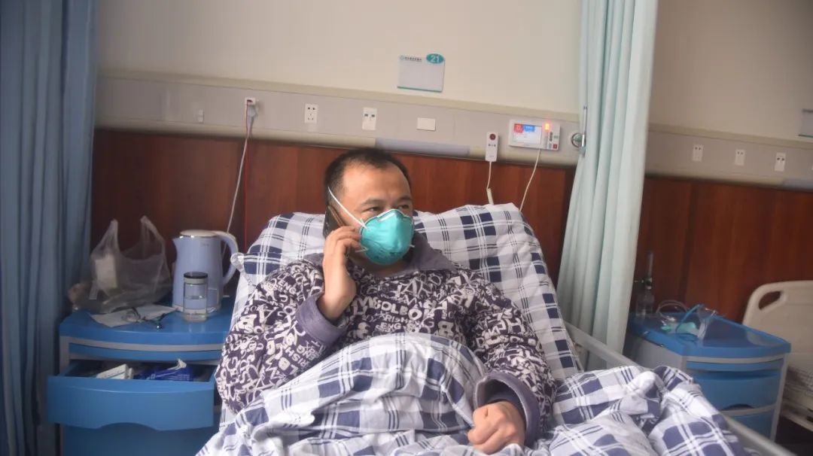

作家方方：疫情看上去稳定，但人心似不太稳（57）-作家方方-财新博客-新世纪的常识传播者-财新网
原文链接 备份链接 3月21日。 封城第59天。这么长时间了！ 昨天那么大的太阳，今天突然就阴了。下午还下了点雨。这时节的春雨，对于院子里的树以及花，都还是很需要的。前两三天，武大樱花盛开，树下空荡无人，估计是记者拍了一些照片，同学群里便 …


致敬所有奋战在一线的医护人员。


武汉的一月，气温总在10度以下，阴雨天气占了大半。2020年1月14日那天，不仅有雨，还有三到四级的风。武汉协和东西湖医院重症监护室（ICU）主任袁海涛和他的同事，推着一个因病毒性肺炎插管的病人，从传染科转移到重症监护室。
病人37岁，没有基础性疾病。他是一个1月8号才有名字的新型冠状病毒肺炎（在这之前，还被称为不明原因肺炎）的“疑似病人”，正面临着“生死劫”。
“疑似”只是因为缺少程序上的“核酸检测”，在袁海涛等一线临床医生的判断中，早已是新冠临床确诊病人。这种新型病毒，往往让病人早期出现特殊的“毛玻璃”状的肺部CT影像，后期变为“白肺”，明显地区别于一般细菌性肺炎。而这个病人，四分之三的肺部都已是“白肺”，已是极其危重的重度ARDS（成人呼吸窘迫综合征）状态，已到了不得不插管的地步。
传染科病房转到ICU只有600米，是一个病人濒临死亡，用常规方法已经无法救治的标志。一个病情逐渐加重的病人，病毒载量都异常高，即使在户外，空气也并不安全。病毒让他的肺部功能几乎丧失，病人像溺水的人一样，呼吸困难，挣扎躁动，袁海涛他们不得不用力按着他，雨水混杂污水流进他的护目镜，打湿了他的二级防护服。
第二天，他就开始发烧了。此后的二十多天里，当袁海涛自己的身份转为新冠疑似病人、确诊病人、病情不断严重到插管边缘时，他才意识到，1月14日那600米的路程，也是一个医生，在抗击新冠疫情中的“生死劫”。
△ 袁海涛工作照，受访者供图
感染：一开始，医生们在防护上却并未特别在意
转移完病人的那一天，袁海涛在医院住了一夜。那段时间，他特别忙。从1月初，他就成为武汉东西湖区不明原因肺炎专家组（后改名为新冠专家组）成员，他要参与东西湖区新冠相关病例的会诊。在1月14日之前，每天都要查房、会诊、讨论的袁海涛已经经历了几十个病人。他所在的医院，协和东西湖区医院在1月中上旬有三十多个“疑似病人”住院，住在医院感染科。
收治的病人中，大部分都没有华南海鲜市场接触史。1月初武汉市并没有核酸检测试剂，后来有了，也有一个漫长的确诊周期：经过专家组会诊后，上报市疾控，市疾控确诊后，上报省疾控，病人等不及。大部分医院，在早期床位充足时，收治病人是通过肺部CT影像——新冠病毒肺炎患者的肺部CT有显著的毛玻璃状，明显区别于其它肺炎。
虽然当时专家组的意见是未发现明显的人传人，确诊患者数字在很长一段时间内也停留在41例，没有增加。但武汉各大医院感染科、发热门诊的医生根据自己往年的经验，对这一点存疑：他们认为，只要是病毒性肺炎都存在人传人的风险；在已确诊的40余例中，有一例有家族聚集史，这预示着人传人的可能。
但长期在医院这种事业单位体制内生存的医生们，对外遵循统一的口径，他们只能在私下里悄悄交流各自医院的情况。医生们隐约从别的医院听说，武汉市中心医院可能有医护人员感染，武汉协和神经外科有十几名医护人员“中招”，神外出身的袁海涛曾问过武汉协和神经外科的医生，对方没有明说，只说了一句“现在科室停诊”。重症医学科的医生们私下交流，互相提醒，接触这种病人要小心。
一开始，医生们对新冠病毒的传染性不了解，加上早期发病的病人以轻症患者居多，即便认为可能人传人，大家在防护上却并未特别在意。袁海涛在早期会诊轻症病人时，和其它专家一样，只戴一个口罩，然后洗手，有时甚至连口罩也忘记戴。至于其他对这种疾病不太了解的医生，接诊病人甚至连口罩都不戴。
疾病发展需要一个周期，在武汉各大医院中，轻症患者中有一部分的病情逐渐加重，对于症状加重的病人，东西湖医院自己要求医护人员防护升级到二级防护。
1月14日那个插管病人，是袁海涛印象中的第一例危重症病人。对这个病人，东西湖区疾控来了工作人员进行会诊。不经意间，区疾控的工作人员说了一句话，大意是，这个病可能比你们想象的严重，轻症病人要做二级防护，像这样的危重症病人插管、吸痰时要做三级防护。
疾控工作人员这一不经意、非正式的提醒，几乎证实了病毒不仅人传人，而且在传染性上不可掉以轻心。那时不少医院还缺少三级防护措施，因此这个病人在进行插管时，东西湖医院向区疾控借了一个三级防护需要的正压头套。
1月15日，加班在医院住了一晚的袁海涛回到了家中，感觉肌肉酸痛，他心想，该不会中招了吧？千万不要发烧。当天晚上，他独自在书房睡下了，担心的情况发生了，他开始发烧，体温达39℃。
第二天一早他急忙赶往医院，在路上，给家人打了一个电话，让他们把书房用消毒液和酒精消毒，开窗通风，做好交待，去放射科拍片，他的肺部CT已有毛玻璃样阴影，一做血常规，“八九不离十”是新冠肺炎，于是马上安排隔离、住院。

△ 治疗中的袁海涛，受访者供图
病危：清醒地意识到自己可能要插管
这时，原来的住院科室已经没床了，直到当天晚上，袁海涛才住进刚刚改造好的病房。
1月初，武汉协和东西湖医院被市里定为收治新冠肺炎的定点医院。1月中旬，医院收治的疑似病人越来越多，感染科30多张床位很快就不够用。武汉对外公报的病例长期停留在41例时，医院自己开始将呼吸科两层楼的开放病房改造为隔离病房，将原来呼吸科住的非新冠肺炎的肺部感染病人和慢性支气管炎病人劝离出去，改造后的呼吸科全部收治新冠疑似病人。
袁海涛的住院，在东西湖医院内部对全部人员都是一个重大的警醒。一线医生的感染，坐实了新冠病毒“人传人”的可能。从此，医护人员主动地相互提醒防护措施做得够不够。
一月中下旬病人激增的情况下，医护人员的防护意识增强是对自身的重要保护。但病人那边，却不容乐观。改造后的床位不断增加，但赶不上新冠患者的增长速度。1月上旬，只要是肺部CT异常的病人还可以收治入院，到了1月中旬，这个条件就难以执行。
住不进医院的肺部CT异常的病人，医生只能建议门诊用药、门诊输液，然后回家观察。那时，社区参与的居家隔离政策尚未出台，医生建议的回家隔离，并没有丝毫约束力。
在发热门诊，一个医生后面有几十乃至上百个病人等待就诊，环境嘈杂，医生不可能有时间详细叮嘱病人回家隔离的种种细节，这些病人回家后极有可能传染家人，而且这些住不进医院的病人，因私家车在医院附近难以停车，他们往往乘坐地铁、公交等公共交通工具，辗转各大医院求医。
这段时间这些病人成为数量巨大的移动传染源，而被他们传染的人有较长的潜伏期，甚至无症状，成为新的传染源，这一切为日后武汉新冠病人确诊、疑似人数呈几何数量的激增，埋下了导火索。
一年的年底到第二年初的春节之间，是每年节日最多的一段日子。因为有圣诞节、元旦、小年、除夕，春节这些节日在前面等待。不管武汉的天气如何，人们都喜气洋洋，18号是南方的小年，住院两天的袁海涛问妻子，了解到街上戴口罩的百姓依旧寥寥无几，他们走亲访友准备年货，医院的紧张和外界的祥和，冰火两重天。
核酸检测的等待期依旧漫长，袁海涛住院两天之后，18日才做了第一次核酸检测，结果是阴性。临床医生都知道，核酸检测的准确性受病毒载量和取样的限制，准确率只有30%-50%，很多医生形容就像钓鱼，如果钓上鱼来，证明池塘里一定有鱼，如果钓不上来，不代表这个池塘里没有鱼。不管核酸检测结果如何，只要症状不减轻，该治疗还要治疗。
在这几天内，他16日开始口服药，17日开始输液，但症状却日趋严重，每天高烧不退，肺部的CT检查，每次的阴影都有所增加。住院十天时，袁海涛已经到了说话都困难的地步。
在同学同事眼中性格极其淡定的他，在熟人的群聊中总是轻描淡写，说自己的病情问题不大。在治疗过程中，他和主治医生一起讨论对自己的治疗方案。
但持续治疗不见好转之后，袁海涛内心开始焦躁，开始有不详的预感。呼吸极其困难时，他上了经鼻高流量，但症状丝毫未好转，身为重症监护室主任的他，清醒地意识到自己下一步面临的很可能是“插管，上有创呼吸机”。
对于插管，医生内部面临着争议。对大部分呼吸科医生来说，插管上有创呼吸机对病毒性肺炎病人是一个槛，后面每一步都面临更多风险。插管后，人会极不舒服，容易出现人机对抗，如果使用镇静、镇痛药也无效，就会用肌松剂停掉病人的自主呼吸，完全靠机控呼吸。
此外，插管之后，病人的口咽屏障消失，门户大开，面临细菌、真菌感染，全身的机能、免疫力下降，肺部感染进一步加重，后来可能面临多器官功能的障碍和衰竭，然后一步步走向死亡。
即使主张对危重病人早插管的重症科医生，也在评估病人是否插管上，极其慎重。如果不插管能够扛过来固然很好，但那时的袁海涛以及治疗他的医生，都认为不乐观了。
距离1月14日已半个月，一部分轻症病人已慢慢转化为重症。医生们对新冠病毒肺炎的认知在临床实践中不断积累，他们发现，轻症的患者，有一部分人会持续轻症，可以慢慢恢复。而另有一部分病人会转化为重症，由轻到重的时间是十天到两周左右。有时轻症到重症，会有一个忽然的变化。
22日前后，在住院的袁海涛听到钟南山院士公开讲新冠病毒是“人传人”的，他松了一口气，觉得终于有一个有身份地位、有业界公信力的人公开说这句话了，让他们这些心存疑虑的医护人员确认了“人传人”的事实，也让各方都意识到事情的严重性。
1月28日前后，东西湖医院的重症监护室已经住满了病人，而在普通病房，根本就不具备插管上有创呼吸机的条件。即便袁海涛是重症监护室主任，也不可能把别的病人赶走，自己住进去。他和院领导商量，决定转院。

△ 2月7日，袁海涛出院，妻子来接他。图片来源：武汉市东西湖区人民政府官方微博
出院、隔离、重返一线：上了战场就不能当逃兵
1月29日，袁海涛转入武汉市肺科医院的重症监护室，在这里做的核酸检测，结果是双阳性，也就是确诊了。
肺科医院重症监护室的主任胡明是袁海涛的好友，听到袁海涛病情危重消息的一瞬间忍不住大哭了一场。亲自查看袁海涛病情后，胡明决定赌一下，继续给袁海涛用经鼻高流量治疗，如果这一关熬得过去，就不用插管。当时北京朝阳医院的几位呼吸科专家和中部战区总医院的ICU邬明主任来援助肺科医院，也参与了袁海涛的治疗。
经鼻高流量治疗，是无创呼吸机的一种，也让人极度不适，要病人在使用的过程中高度配合，大多数人不容易耐受。在肺科医院，和袁海涛同房间的那位病人，也是一位年轻的男性，一直不适应无创呼吸机，最终插管上了有创呼吸机。
袁海涛使用经鼻高流量治疗，虽然未见明显好转，但他告诉自己，再难也要坚持，如果最终不得插管上有创，意识丧失，那就会完全失去对自己病情的决策权，同时面临更多的风险。
幸运的是，在坚持几天后中，他的呼吸功能逐渐变好，血氧饱和度脱离危险边缘，发烧长达半个月之久的袁海涛开始退烧，他很高兴：这是个好兆头。
事后回忆，袁海涛认为，新冠病毒肺炎虽然有许多未解之谜，但在治疗方向没有跳出病毒性肺炎这个大框架。要降低死亡率，有三条治疗准则：抗病毒治疗、控制并发症和增强免疫力。
袁海涛认为自己治疗的转折点，在于免疫力增强。在转入肺科医院前十几天，他的血象检查，淋巴细胞一直很低。转院之后，用了增强免疫力的药，淋巴细胞增多后，才逐渐好转。
随后的一周，袁海涛的症状不断减轻。准备出院时，因为不放心核酸检测的结果，他做了三次核酸检测——比出院标准的要求还多一次。三次的核酸检测结果都是阴性，肺部CT有明显好转，但并未完全恢复。2月7日，达到出院标准的他出院后，转入了东西湖医院为医护人员专门设置的隔离病房，进行为期十四天的隔离。
住院的这二十多天，外界的变化翻天覆地。武汉市的新冠病人确诊人数，已经由最初公布的41例，暴增至14982例，暴增的原因，包括当初未及时让人们预防人传人时的感染，居家隔离不力的交叉感染，潜伏期病人的发病，以及核酸检测的大力推进。
虽然确诊人数暴增，医护人员的压力却没有他当初入院时那么大，因为在这半个月内，武汉已经开始四类人的分类收治，定点医院已经扩展到第5批，可以收治重症病人的床位数已经扩展到9000多张，轻症确诊病人到方舱医院，危重症病人到新建的雷神山、火神山以及定点医院，疑似和密切接触人员到宾馆隔离点。
不断有危重症病人从东西湖转出去，转到同济中法医院等有ECMO的医院，轻症的病人也不像当初堵塞在门诊和急诊大厅。袁海涛认为，病人分流的方向是正确的，不同医院可以分门别类地治疗某一种类型的病人，有利于对病人的治疗和管理。
2月21日，袁海涛结束隔离期，回归一线和同事继续救治新冠病人。在此时，全国的医务人员同行，已有3000余位被感染，其中已有超过10位医护人员去世。
经历过生死线的袁海涛感慨，不管医护人员平时如何，但需要他们挺身而出的时候他们决不会退。新冠肺炎对大家都是未知的，每个人都会有一种恐慌和无助，但只要上了战场就不能当逃兵，虽然不知道子弹最终会击中哪里。
王晨|撰稿
微信号：2174127
王吉陆|责编
微信号：wangjilu006

我们尊重原创版权，未经允许请勿转载。
授权转载
郑琪 微信号: 1281949389
商务合作
上海：leslee 13916263824
北京：Jessie 13911125922
线索爆料、意见反馈，加入核心读者社群
请扫码联系健闻君

让朋友们看到你也在看
↓↓↓
健闻王晨
长按二维码向我转账
受苹果公司新规定影响，微信 iOS 版的赞赏功能被关闭，可通过二维码转账支持公众号。
文章已于修改
原文链接 备份链接 3月21日。 封城第59天。这么长时间了！ 昨天那么大的太阳，今天突然就阴了。下午还下了点雨。这时节的春雨，对于院子里的树以及花，都还是很需要的。前两三天，武大樱花盛开，树下空荡无人，估计是记者拍了一些照片，同学群里便 …
原文链接 备份链接 后来我回想，也挺后怕的。我接诊阿姨的时候，给她查体，她对着我咳嗽过。 口述 | 宋亚锋 整理 | 黄 祺 “突然听到一个消息，心情很不好，内心很恐惧，虽然根本不认识，但感觉很难过，一路走好，希望你的家人能够渡过难 …
原文链接 备份链接 澎湃新闻记者 赵思维 发自武汉 实习生 夏梦洁 从1月23日21时许发出第一条求助微博，25岁的新冠肺炎痊愈者武康发布了50余条微博，粉丝从1000涨至现在的179万粉丝。 这些微博记录了他从发病住不进院的无助、被病魔 …
原文链接 备份链接 住进武昌方舱的第二天，付丹看到有人在垃圾站收拾，将在地上扔得乱七八糟的垃圾捡起来放到垃圾箱里。她感到有些奇怪，清洁工怎么没有穿防护服呢。一问，原来那人是住在同一个病区的病友，住在159号床。 文***｜******* …
原文链接 备份链接 “很多人去世。”袁鸣说，“但他们和我们都尽了最大的努力。” 2月15日上午，刚刚经历了一夜冬日雷雨和大风的武汉大雪纷飞，袁鸣早早进入病房查房。依次穿上蓝色隔离服、白色防护服，戴上手术帽、面屏和护目镜，套上手套和脚 …